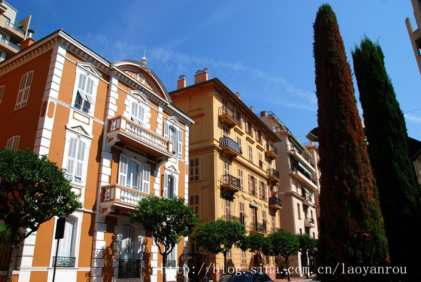
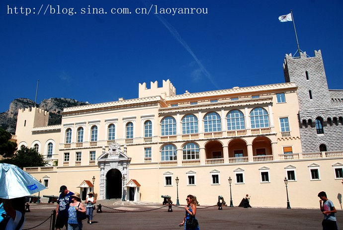
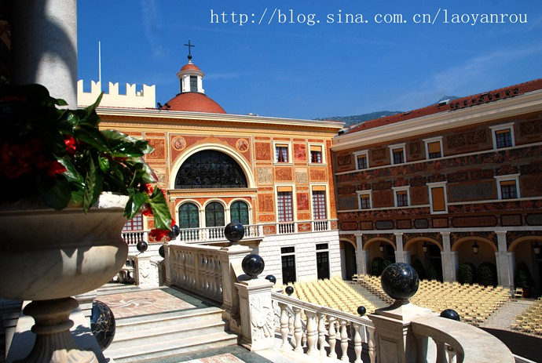
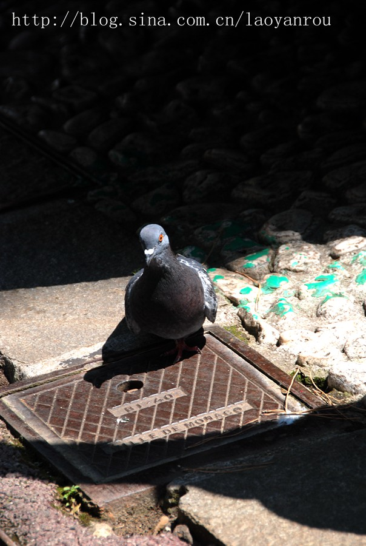
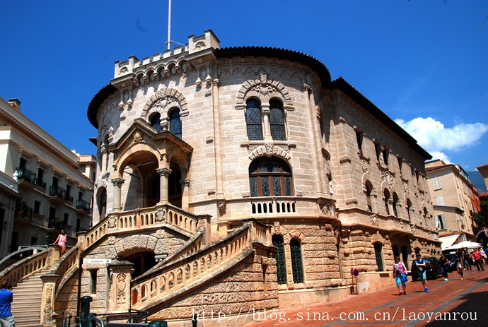
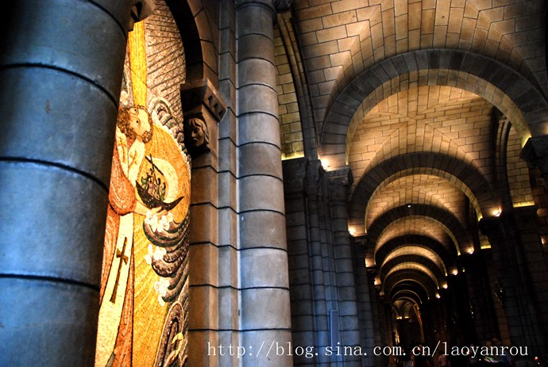
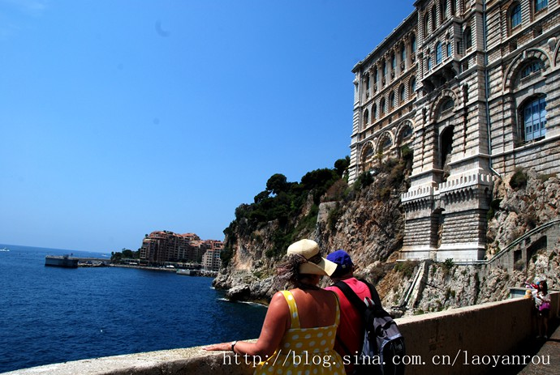
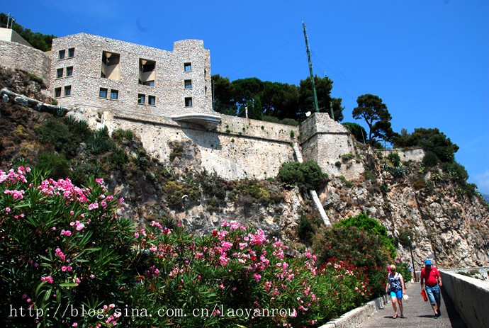

欧游札记之徜徉法兰西(DAY7.1尼斯-摩纳哥)

DAY 7.1 尼斯-摩纳哥
大清早便被设在四点半钟的闹钟叫醒，因为贪便宜且为了挤多些游玩时间便定了六点多的火车票去尼斯，从马赛去尼斯没有TGV列车只有普通的TER，因此路途耗时长达三个小时左右，幸好所住酒店就在火车站旁，等睡眼惺忪地洗漱完毕后，我们拉上行李、拎上昨晚买好的早餐便踏上了开往尼斯的火车。时间尚早我们所坐的家庭位边上基本空无一人，但对周边环境的警惕性始终敌不过阵阵睡意的侵袭，我们把早餐的面包和牛奶囫囵吃完，相继倒头便睡，这一觉睡了差不多有两个多小时，连火车所途经的法国蓝色蔚蓝海岸的诸多地中海风情和小镇风光均无缘一见。
等一觉醒来没多久就抵达了尼斯，这是座仅次于巴黎的法国第二大旅游城市，也是《爸爸去哪儿2》中刘烨老婆安娜的家乡。尽管一下火车感觉尼斯火车站的规模气势似乎与其旅游大城市的地位不太相称，而且公共交通似乎只有的士和公交车可搭，但时间所逼已没空矫情耽搁了，我们按照事先所做功课，搭上10路公交车赶到酒店放下行李就马不停蹄地杀了个回马枪，回到火车站买了开往摩纳哥的车票。半个多小时后跳下车时竟发现摩纳哥的火车站建在一座山的山腹里，差点没把我们给吓回火车去。从车站出来沿着山边公路往海岸方向将信将疑地走了好一会，终于才看到了一大片依山傍海像模像样的地中海风格城镇建筑和蔚蓝海湾中停泊着好几溜的豪华游艇，心想这才是号称全世界人均收入最高的国家的样子嘛！

即便如此，自负见过一些世面的我们并没有为摩纳哥稍显平淡的街景而驻留太久，直接就顺着山路向上朝亲王宫去了。这座王宫17世纪前曾是军事要塞，至今仍有一半作为王室住所和政府办公场所，另一半则作为博物馆对外开放，我们费了半天爬山的劲也正是为此而来。我们第一眼看到的王宫与其说是王室宫殿倒还不如说是一座迄今年代不远的典型政府建筑，略带一些地中海古典风格，奶黄色的外墙被粉刷得宛然一新，总体上感觉比较亲民却少了一些皇家气派，但或许是由于我们看过太多类似凡尔赛宫之流的金碧辉煌皇室宫殿，审美眼光被惯坏了的缘故吧。直到我们进入到王宫内部看到环绕庭院四周的几面绘满了记载宗教和皇室活动的壁画、中间镶嵌了大幅雕花彩色玻璃窗的墙壁后，方才感受到一些深藏不露的摩纳哥王室的皇家威严。接下来在王宫博物馆的参观所见所闻也基本和凡尔赛宫大致雷同，无非就是国王及其家眷的起居室、办公场所、会客场所等等，倒是参观完毕后来到王宫外面的山顶广场时，可以俯瞰整个摩纳哥城市及地中海港湾的旖旎风光，颇令我们神清气爽了一把。而这边厢小女又拿出了早上吃剩的面包兴致勃勃地喂起广场上三三两两的鸽子来，引得一大群鸽子甚至还有麻雀和海鸥竞相争宠，鸽鸣声、振翅声、贼海鸥的叫嚣声此起彼伏，场面蔚为壮观。就在我们自嗨得不亦乐乎的时候，那边厢穿白色制服的王宫卫队已不知不觉完成了换岗的仪式，一大群游客围了里三层外三层的就只为了一睹王宫卫队的风采，我们远远地望着烈日底下人头攒动的游客们，轻轻地撒了几块面包屑给广场上的鸽子，淡然一笑。想必即便在同一时间、同一场景下各人所求也尽不相同，而人生境界的区别或许就在于争与不争之间吧。




离开亲王宫，下山途中我们踏入了一间应该是摩纳哥王室经常做礼拜的教堂，内里尽管面积不大，但在教堂圣坛周边的地面上环绕铺放着一圈刻着各时代皇室成员姓名的石碑，其中一块碑石比较特殊是个无字碑，上面静静地竖立着一幅摩纳哥王子和其平民王妃的素描肖像画，提醒着人们这里将是上演了现代版白马王子与灰姑娘故事的雷尼尔三世和美国好莱坞明星格蕾丝凯丽的安息之地，摩纳哥人民通过这种普通得不能再普通的方式来纪念这段浪漫脱俗的爱情，表达对已故格蕾丝王妃的热爱。

从亲王宫下山的时候颇费了一些周折，因不愿走回头路选择了另外一个朝着海岸的方向下山，心想着条条大路通罗马吧。不料此选择却让我们好好体验了一把什么叫易守难攻军事要塞的艰险，经过一段比较平缓的七弯八拐的下山小径，顺带俯瞰了一下港湾内三五成群的豪华游艇和岸边清一色的豪宅别墅，突然发现“山重水复疑无路”，前面只剩一电梯入口的标志，硬着头皮随人流挤进电梯下降了十几层楼的高度，出来以后继续顺着手扶梯又盘桓数层总算看到外面有条沿海公路，当沿着公路往摩纳哥城中心走的时候回头一看才恍然大悟，原来我们其实是沿着亲王宫所盘踞小山的最险要的悬崖处下山的，难怪如此陡峭坎坷，若是没有电梯的话这里当年的确是“一夫当关万夫莫开”的绝佳天险要塞之处。

